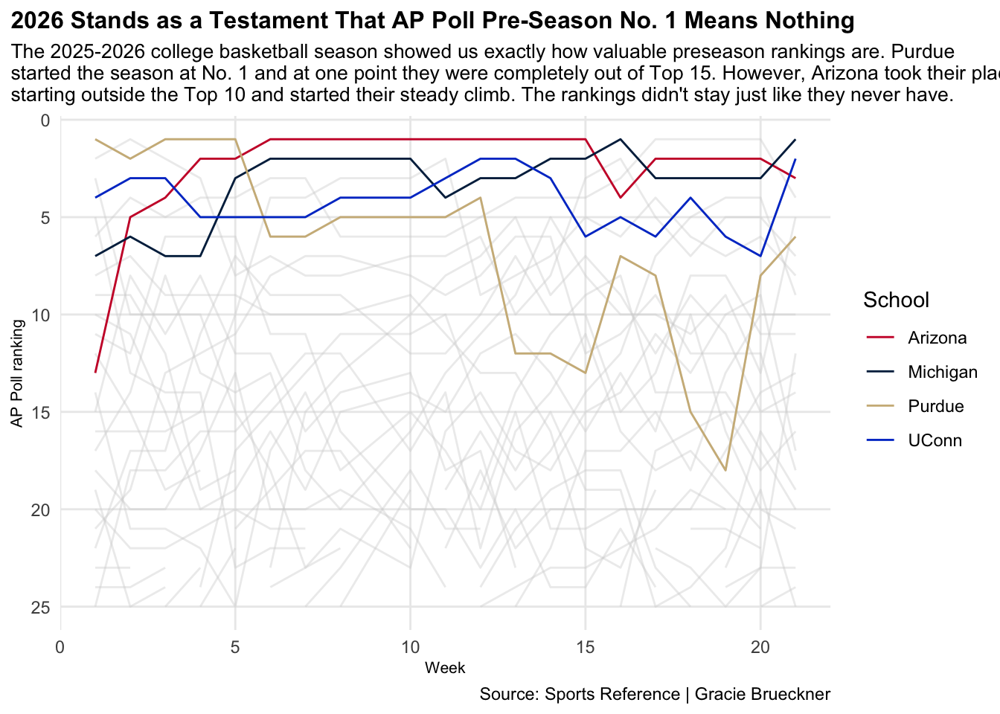
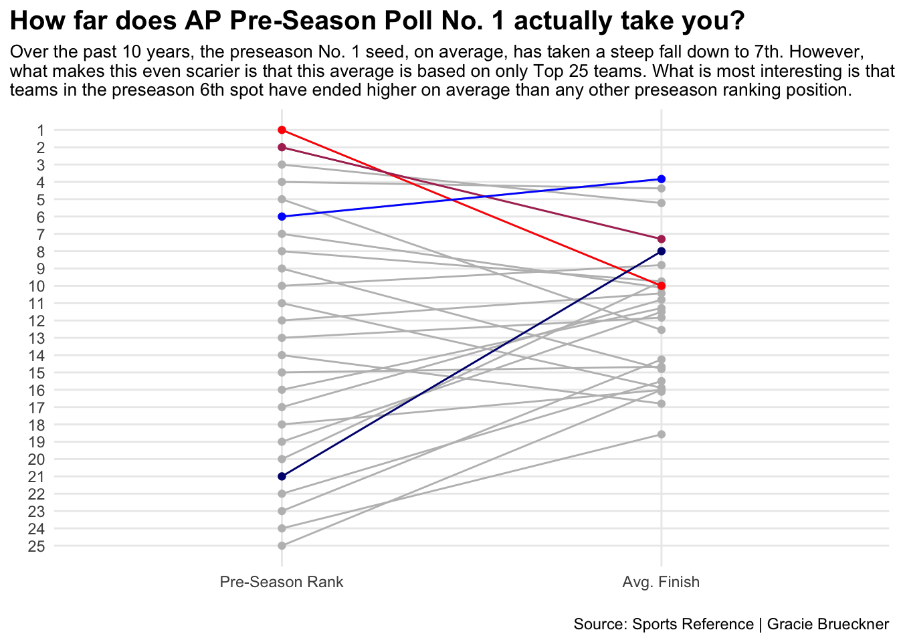
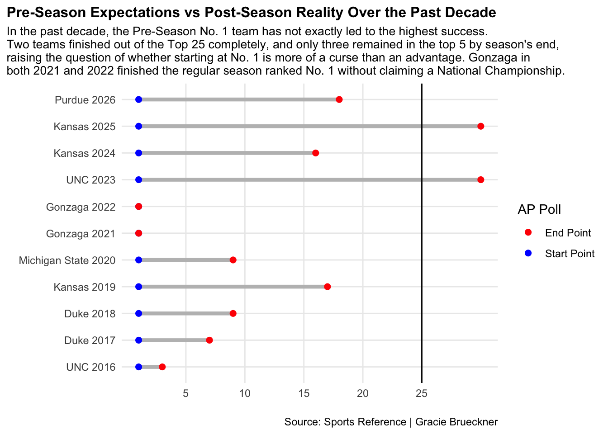

If you are ranked No. 1 in the AP Pre-Season Poll, are you destined for a National Championship?
basketball
ap poll
cbb
Author
Gracie Brueckner
Published
April 10, 2026
Every college basketball season begins with expectations, and for one team, the ceiling has been set higher than the rest. The idea of a national title starts to slip in and that kind of pressure is immediately placed.
The AP preseason poll crowns a No. 1 team before any game is played. This ranking is determined by returning talent, incoming players, strength of schedule, depth of coaching staff and overall championship potential. A multitude of factors decide which team is expected to dominate the rest.
However, the privilege of starting as No. 1 isn’t the advantage that people think it is.
It may actually be a setup for under performance.
This season is the perfect display of what the preseason poll actually means: not much.
The Purdue Boilermakers started the season in that No. 1 spot, but as expected, that ranking didn’t stand. Instead, their season followed a familiar pattern, early success and a slow decline.
Code
library(tidyverse)library(hoopR)appoll <-read_csv("APPOLLDATA25.csv")aplong <- appoll |>pivot_longer(cols=c(-School,-Conf),names_to ="week",values_to ="rank" ) |>mutate(week =as.numeric(week))mu <- aplong |>filter(School =="Michigan")uconn <- aplong |>filter(School =="UConn")ua <- aplong |>filter(School =="Arizona")pu <- aplong |>filter(School =="Purdue")top <-bind_rows(mu, uconn, ua, pu)ggplot() +geom_line(data=aplong, aes(x=week, y=rank, group=School), color="lightgrey",alpha = .4) +geom_line(data=top, aes(x=week, y=rank, group=School, color=School)) +scale_y_reverse() +scale_color_manual(values=c("#CC0033", "#00274C", "#CEB888", "#013ECD")) +labs(x="Week", y="AP Poll ranking", title="2026 Stands as a Testament That AP Poll Pre-Season No. 1 Means Nothing", subtitle="The 2025-2026 college basketball season showed us exactly how valuable preseason rankings are. Purdue\nstarted the season at No. 1 and at one point they were completely out of Top 15. However, Arizona took their place\nstarting outside the Top 10 and started their steady climb. The rankings didn't stay just like they never have. ", caption="Source: Sports Reference | Gracie Brueckner" ) +theme_minimal() +theme(plot.title =element_text(size =12, face ="bold"),axis.title =element_text(size =8), plot.subtitle =element_text(size=10), panel.grid.minor =element_blank(),plot.title.position ="plot" )

Another important thing to note is the rise of teams that started outside of the Top 5.
The Arizona Wildcats and Michigan Wolverines both had impressive climbs throughout the season. Michigan, going on to win a national championship, started outside the Top 5, proving that preseason rankings don’t write the full story.
In fact, the average ending position of Top 25 teams over the past decade shows that teams starting at No. 6 higher than any other seed by the end of the season.
Teams starting at that coveted No. 1 spot on average fall to 7 or 8.
So is No. 6 the magic number?
Well, starting the season at No. 21 actually produces the greatest climb. Over the past 10 years, Top 25 teams ranked 21st in the preseason poll have, on average, risen to around 8th by the end of the season.
Code
polls <-read_csv("polls2016-2026.csv")allpollslong <- polls |>pivot_longer(cols=c(-School,-Conf, -Year),names_to ="week",values_to ="rank" ) |>mutate(week =as.numeric(week)) slopedpolls <- polls |>mutate(last_poll =case_when(is.na(`20`) &is.na(`21`) &is.na(`23`) ~`19`,is.na(`20`) &is.na(`21`) ~`23`,is.na(`20`) ~`21`,TRUE~`19` ) ) |>group_by(`1`) |>summarize(`Avg. Finish`=mean(last_poll, na.rm=TRUE) ) |>rename(`Pre-Season Rank`=1 ) |>mutate(Order =`Pre-Season Rank` ) |>pivot_longer(cols =-Order,names_to ="Rank",values_to ="Avg. Finish" ) slopedpolls$Rank <-factor(slopedpolls$Rank, levels=c("Pre-Season Rank", "Avg. Finish"))one <- slopedpolls |>filter(`Order`=="1")two <- slopedpolls |>filter(`Order`=="2")six <- slopedpolls |>filter(`Order`=="6") twentyone <- slopedpolls |>filter(`Order`=="21")ggplot() +geom_line(data=slopedpolls, aes(x=Rank, y=`Avg. Finish`, group=Order), color="grey") +geom_point(data=slopedpolls, aes(x=Rank, y=`Avg. Finish`), color="grey") +geom_line(data=one, aes(x=Rank, y=`Avg. Finish`, group=Order), color="red") +geom_point(data=one, aes(x=Rank, y=`Avg. Finish`), color="red") +geom_line(data=two, aes(x=Rank, y=`Avg. Finish`, group=Order), color="maroon") +geom_point(data=two, aes(x=Rank, y=`Avg. Finish`), color="maroon") +geom_line(data=six, aes(x=Rank, y=`Avg. Finish`, group=Order), color="blue") +geom_point(data=six, aes(x=Rank, y=`Avg. Finish`), color="blue") +geom_line(data=twentyone, aes(x=Rank, y=`Avg. Finish`, group=Order), color="navy") +geom_point(data=twentyone, aes(x=Rank, y=`Avg. Finish`), color="navy") +scale_y_reverse(breaks =c(1,2,3,4,5,6,7,8,9,10,11,12,13,14,15,16,17,18,19,20,21,22,23,24,25)) +labs(x="", y="", title="How far does AP Pre-Season Poll No. 1 actually take you? ", subtitle="Over the past 10 years, the preseason No. 1 seed, on average, has taken a steep fall down to 7th. However,\nwhat makes this even scarier is that this average is based on only Top 25 teams. What is most interesting is that\nteams in the preseason 6th spot have ended higher on average than any other preseason ranking position.", caption="Source: Sports Reference | Gracie Brueckner" ) +theme_minimal() +theme(plot.title =element_text(size =15, face ="bold"),axis.title =element_text(size =8), plot.subtitle =element_text(size=10), panel.grid.minor =element_blank(),plot.title.position ="plot" )

This pattern extends beyond the 2025-2026 College Basketball season.
Over the past 10 years, two teams that started at No. 1 have completely fallen out of Top 25 by the end.
The only exception comes from Gonzaga in 2021 and 2022, teams that still failed to win a national championship.
In fact, 2016 University of North Carolina was the only other program that even ended the season as a Top 5 team.
The rest fell to their doom instead of intended destiny.
Code
endpoll <-read_csv("endpoll.csv") |>mutate(TeamSeason =paste(School, Year))ggplot() +geom_segment(data=endpoll, aes(y=reorder(TeamSeason, Year), yend=TeamSeason,x=`1`, xend=last_poll),color="grey",linewidth =1.5, ) +geom_point(data=endpoll,aes(y=TeamSeason,x=`1`,colour="Start Point" ),size=2 ) +geom_point(data=endpoll,aes(y=TeamSeason,x=last_poll,colour="End Point" ),size=2 ) +geom_vline(xintercept =25) +scale_color_manual(name="AP Poll", values=c("red", "blue")) +scale_x_continuous(breaks =c(5, 10, 15, 20, 25)) +labs(x="", y="", title="Pre-Season Expectations vs Post-Season Reality Over the Past Decade", subtitle="In the past decade, the Pre-Season No. 1 team has not exactly led to the highest success.\nTwo teams finished out of the Top 25 completely, and only three remained in the top 5 by season's end,\nraising the question of whether starting at No. 1 is more of a curse than an advantage. Gonzaga in\nboth 2021 and 2022 finished the regular season ranked No. 1 without claiming a National Championship.", caption="Source: Sports Reference | Gracie Brueckner" ) +theme_minimal() +theme(plot.title =element_text(size =12, face ="bold"),axis.title =element_text(size =8), plot.subtitle =element_text(size=10), panel.grid.minor =element_blank(),plot.title.position ="plot" )

So, the answer becomes clearer.
If you want a National Title, don’t start at No. 1.
Is it pressure or is it expectation? The exact cause of this fall is unknown.
However, the numbers prove that the No.1 team in the AP preseason poll is far from guaranteed to win the national championship.